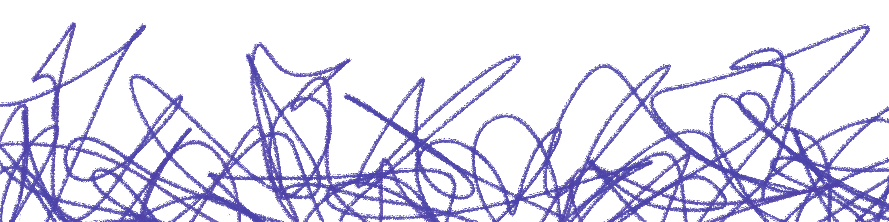

Hiába próbáltál előrébb jutni, végül megint egy olyan helyzetben találod magadat, ahol szinte mindent újra kell kezdened. Nem azért, mert ne tettél volna meg mindent a céljaid elérése érdekében, hanem mert a körülmények újra meg újra visszalöknek oda, ahonnan már egyszer megpróbáltál kitörni.
Térj vissza a kiindulópontra!
